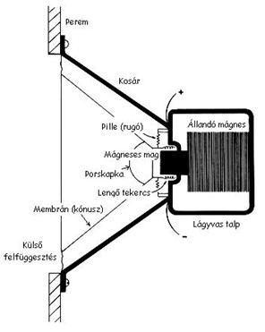

Hangszórónak nevezzük azokat az elektronikai eszközöket, amelyek elektromos jelet alakítanak hanggá. Az aktív hangszórók jelerősítő elektronikával vannak egybeépítve.
A legelterjedtebb típus, amelyben egy mágnessel a belsejében egy csillapítottan lengő tekercs egy (általában kúposan kialakított) laphoz van rögzítve. Ha a tekercsben ingadozó erősségű áram folyik, akkor az megmozgatja a lapot (kónuszt), ami az áram erősségének megfelelően kitér. A hallható frekvenciatartományban (20 Hz - 20 kHz) ezt hangként érzékeljük.
Dinamikus hangszóró felépítése
A dinamikus hangszórótól abban tér el, hogy a tekercs áll, és egy kónuszhoz rögzített lágyvas „nyelvet” mozgat. (A 20. század közepe óta csak történelmi jelentősége van).
A plazmahangszóró nem más, mint egy folyamatos plazmaforrás. Ahhoz, hogy hangszóróként tudjuk használni, változtatnunk kell a plazma térfogatát. Ez a változás a levegőben nyomáshullámot kelt, amelyet fülünk hangként érzékel. A plazmahangszóró lelke általában egy pár száz kHz, vagy néhány MHz frekvencián működő nagyfeszültségű generátor. A bemenő hangfrekvenciás jel modulálja a nagyfrekvenciás feszültség amplitúdóját (AM), vagy kitöltési tényezőjét (PWM), így hatással van a plazma térfogatára.
A piezoelektromosság jelenségét használja ki, azonban a legtöbb piezoelektromos kristály természetéből adódóan csak magas hangfrekvenciákat tud megszólaltatni.
2008-as bemutató alapján a Tsinghua Egyetem munkatársai egy szén nanocső réteggel állítottak elő hangot. A felületre vezetett áram azt felmelegíti, és a felülettel érintkező levegő hőtágulása kelti a hangot. Maga a réteg átlátszó, nyújtható és rugalmas. Összeépíthető szilíciumlapka alapú eszközökkel.
Egy 2013-as fejlesztés szerint az átlátszó ionos vezető hangszóró egy rugalmas réteg két oldalára felvitt elektromosan vezető zseléből áll. A vezetőkhöz vezetett hanggal modulált nagyfeszültség keltette rezgések jó hangminőséget állítanak elő.
Átlátszó ionos hangszóró" id="Kep32" alt="Ionos hangszóró">A kép közepén látható az átlátszó ionos hangszóró
Több hangszóró megfelelő vezérlésével és elhelyezésével térbeli hangzást lehet elérni. Az alább felsorolt módszereket fejlesztették ki ennek érdekében:
Mono
Egy csatornás rendszer, nem ad térhangzást. Általában hordozható rendszerekben használják.
Álsztereó
Két hangszórós rendszer, azonban csak egy csatorna van. Mindkét hangszóróból ugyanaz szól.
Sztereó
Két csatornás, két hangszórós rendszer.
2+1 csatorna
2+1 csatornás, azaz a bal-jobb hangszórós rendszereket egy mélysugárzóval egészítették ki, ezzel csökkentve az akusztikai interferenciákat
Kvadrofon
Négy hangszórós rendszer, megjelenésekor nem terjedt el a költsége miatt.
4+1 csatorna
Ezt még nevezik Dolby Stereo-nak is, általában mozik használják.
5+1 csatorna
Hat hangszórós rendszer: első sztereó, hátsó sztereó, valamint center (elöl középen) és mélysugárzó hangfalak veszik körbe a hallgatóságot. A center szerepe leginkább a filmek prózai részén van, tehát a filmben lévő beszédhangok sugárzása a center sugárzó szerepe, eltekintve a speciális effektektől.
AC-3
Adatsebesség: 32–640 kb/s. Mintavételi frekvencia: 48 kHz.
DTS
Mozikban használt hangtechnika, 5+1 vagy 7+1 hangforrás elrendezésben. 384 kb/s adatátviteli sebességgel, 24 bites felbontással, 192 kHz mintavételi frekvenciával állít elő 8 csatornás CD minőségű hangot.
6+1 csatorna
Még Dolby Digital EX-nek is nevezik. Hét hangszórós rendszer, első sztereó, hátsó sztereó, valamint 2 center, egy elöl középen, egy pedig hátul középen és mélysugárzó hangfal.
7+1 csatorna
Ugyanaz, mint az 5+1-es hangrendszer, de kiegészítve még egy pár sztereó hangfallal. Így a 7.1-es rendszer áll első sztereó, középső sztereó, hátsó sztereó, első center és mélysugárzó (subwoofer) hangszórókból. A számítógépek mai modern alaplapjaira sokszor már integrálva van egy 7.1-es hangkártya.